GloNAF Data
Contents
.libPaths(c("/net/home/swolf/R/x86_64-pc-linux-gnu-library/4.4", .libPaths()))
GloNAF Data#
Add h3_indices to Polygons#
## Preprocess GloNAF
# Load spatial and data-manipulation packages
library(sf) # Read and process spatial vector data
library(data.table) # Efficient data manipulation
library(geos) # Planar geometry operations
library(dplyr) # Data-frame manipulation
library(tidyverse) # Additional data-wrangling and visualization tools
# Read the GloNAF shapefile/layer from the specified data directory
glonaf_shapes <- read_sf(
dsn = "../../Data/GloNAF2/glonaf_2024_nol",
layer = "glonaf_2024_nol"
)
# Repair invalid geometries to support subsequent spatial operations
glonaf_shapes <- glonaf_shapes %>%
mutate(geometry = st_make_valid(geometry))
head(glonaf_shapes)
Linking to GEOS 3.12.1, GDAL 3.8.4, PROJ 9.4.0; sf_use_s2() is TRUE
Attaching package: ‘dplyr’
The following objects are masked from ‘package:data.table’:
between, first, last
The following objects are masked from ‘package:stats’:
filter, lag
The following objects are masked from ‘package:base’:
intersect, setdiff, setequal, union
── Attaching core tidyverse packages ──────────────────────── tidyverse 2.0.0 ──
✔ forcats 1.0.0 ✔ readr 2.1.5
✔ ggplot2 4.0.3 ✔ stringr 1.5.1
✔ lubridate 1.9.3 ✔ tibble 3.2.1
✔ purrr 1.0.2 ✔ tidyr 1.3.1
── Conflicts ────────────────────────────────────────── tidyverse_conflicts() ──
✖ dplyr::between() masks data.table::between()
✖ dplyr::filter() masks stats::filter()
✖ dplyr::first() masks data.table::first()
✖ lubridate::hour() masks data.table::hour()
✖ lubridate::isoweek() masks data.table::isoweek()
✖ dplyr::lag() masks stats::lag()
✖ dplyr::last() masks data.table::last()
✖ lubridate::mday() masks data.table::mday()
✖ lubridate::minute() masks data.table::minute()
✖ lubridate::month() masks data.table::month()
✖ lubridate::quarter() masks data.table::quarter()
✖ lubridate::second() masks data.table::second()
✖ purrr::transpose() masks data.table::transpose()
✖ lubridate::wday() masks data.table::wday()
✖ lubridate::week() masks data.table::week()
✖ lubridate::yday() masks data.table::yday()
✖ lubridate::year() masks data.table::year()
ℹ Use the conflicted package (<http://conflicted.r-lib.org/>) to force all conflicts to become errors
ERROR while rich displaying an object: Error in loadNamespace(x): there is no package called ‘geojsonio’
Traceback:
1. sapply(x, f, simplify = simplify)
2. lapply(X = X, FUN = FUN, ...)
3. FUN(X[[i]], ...)
4. tryCatch(withCallingHandlers({
. if (!mime %in% names(repr::mime2repr))
. stop("No repr_* for mimetype ", mime, " in repr::mime2repr")
. rpr <- repr::mime2repr[[mime]](obj)
. if (is.null(rpr))
. return(NULL)
. prepare_content(is.raw(rpr), rpr)
. }, error = error_handler), error = outer_handler)
5. tryCatchList(expr, classes, parentenv, handlers)
6. tryCatchOne(expr, names, parentenv, handlers[[1L]])
7. doTryCatch(return(expr), name, parentenv, handler)
8. withCallingHandlers({
. if (!mime %in% names(repr::mime2repr))
. stop("No repr_* for mimetype ", mime, " in repr::mime2repr")
. rpr <- repr::mime2repr[[mime]](obj)
. if (is.null(rpr))
. return(NULL)
. prepare_content(is.raw(rpr), rpr)
. }, error = error_handler)
9. repr::mime2repr[[mime]](obj)
10. repr_geojson.sf(obj)
11. repr_geojson(geojsonio::geojson_list(obj), ...)
12. loadNamespace(x)
13. withRestarts(stop(cond), retry_loadNamespace = function() NULL)
14. withOneRestart(expr, restarts[[1L]])
15. doWithOneRestart(return(expr), restart)
| OBJIDsic | IDregion | ISOcountry | LAT | LON | name | SRichness | Area_SqKm | geometry |
|---|---|---|---|---|---|---|---|---|
| <int> | <chr> | <chr> | <dbl> | <dbl> | <chr> | <dbl> | <dbl> | <MULTIPOLYGON [°]> |
| 2 | AFG | AFG | 33.835188 | 66.00674 | Afghanistan | 60 | 641084 | MULTIPOLYGON (((65.69755 37... |
| 5 | RUS.SIB.AK | RUS | 52.611114 | 82.62185 | Altay | 207 | 170808 | MULTIPOLYGON (((79.36609 51... |
| 17 | CHL.AC | CHL | -55.146721 | -68.63069 | Antártica Chilena | 9 | 9039 | MULTIPOLYGON (((-67.21224 -... |
| 18 | ATG | ATG | 17.266173 | -61.79668 | Antigua and Barbuda | 17 | 425 | MULTIPOLYGON (((-61.83264 1... |
| 26 | ARM | ARM | 40.286200 | 44.94739 | Armenia | 370 | 29669 | MULTIPOLYGON (((46.49554 38... |
| 32 | SHN.AC | GBR | -7.943513 | -14.36703 | Ascension Island | 3 | 99 | MULTIPOLYGON (((-14.38028 -... |
# Convert each GloNAF polygon into H3 cells and add neighboring cells
glonaf_h3 <- glonaf_shapes %>%
rowwise() %>% # Process each polygon independently
mutate(
# Find H3 cells whose centroids fall within the polygon
h3_indexes = {
pf <- h3::polyfill(geometry, res = 3)
# If no H3 cell is found, use the polygon centroid as a fallback
if (length(pf) == 0) {
centroid <- sf::st_centroid(geometry)
coords <- sf::st_coordinates(centroid)
# H3 coordinates must be supplied in latitude-longitude order
pf <- h3::geo_to_h3(
matrix(coords[c(2, 1)], nrow = 1),
res = 3
)
}
# Store the H3 indexes as a list-column
list(pf)
},
# Add the central H3 cells and their first-order neighbors
h3_indexes_k1 = list({
base <- h3_indexes
# Generate a one-ring neighborhood around each base H3 cell
expanded <- unique(unlist(
lapply(base, function(ix) h3::k_ring(ix))
))
expanded
}),
# Keep only the neighboring cells that are not in the original set
h3_outer_ring = list(setdiff(h3_indexes_k1, h3_indexes))
) %>%
ungroup() # Return to standard, non-rowwise data-frame behavior
polygon has holes
polygon has holes
polygon has holes
polygon has holes
polygon has holes
polygon has holes
polygon has holes
polygon has holes
polygon has holes
polygon has holes
polygon has holes
polygon has holes
polygon has holes
polygon has holes
polygon has holes
polygon has holes
polygon has holes
polygon has holes
polygon has holes
polygon has holes
polygon has holes
polygon has holes
polygon has holes
polygon has holes
polygon has holes
polygon has holes
polygon has holes
polygon has holes
polygon has holes
polygon has holes
polygon has holes
polygon has holes
polygon has holes
polygon has holes
polygon has holes
polygon has holes
polygon has holes
polygon has holes
polygon has holes
### Convert polygon to h3 index
# Generate H3 indexes for each polygon
glonaf_h3_plain <- glonaf_shapes %>%
rowwise() %>%
mutate(h3_indexes = list(h3::polyfill(st_geometry(geometry), res = 3))) %>%
ungroup()
polygon has holes
polygon has holes
polygon has holes
polygon has holes
polygon has holes
polygon has holes
polygon has holes
polygon has holes
polygon has holes
polygon has holes
polygon has holes
polygon has holes
polygon has holes
polygon has holes
polygon has holes
polygon has holes
polygon has holes
polygon has holes
polygon has holes
polygon has holes
polygon has holes
polygon has holes
polygon has holes
polygon has holes
polygon has holes
polygon has holes
polygon has holes
polygon has holes
polygon has holes
polygon has holes
polygon has holes
polygon has holes
polygon has holes
polygon has holes
polygon has holes
polygon has holes
polygon has holes
polygon has holes
polygon has holes
print(glonaf_h3)
Simple feature collection with 983 features and 11 fields
Geometry type: MULTIPOLYGON
Dimension: XY
Bounding box: xmin: -180 ymin: -75.3207 xmax: 180 ymax: 83.60415
Geodetic CRS: WGS 84
# A tibble: 983 × 12
OBJIDsic IDregion ISOcountry LAT LON name SRichness Area_SqKm
<int> <chr> <chr> <dbl> <dbl> <chr> <dbl> <dbl>
1 2 AFG AFG 33.8 66.0 Afghanistan 60 641084
2 5 RUS.SIB.AK RUS 52.6 82.6 Altay 207 170808
3 17 CHL.AC CHL -55.1 -68.6 Antártica Ch… 9 9039
4 18 ATG ATG 17.3 -61.8 Antigua and … 17 425
5 26 ARM ARM 40.3 44.9 Armenia 370 29669
6 32 SHN.AC GBR -7.94 -14.4 Ascension Is… 3 99
7 34 CHL.RAT CHL -27.4 -69.9 Región de At… 146 77960
8 36 CHL.RAI CHL -46.3 -73.4 Región Aisén… 116 75990
9 37 AZE AZE 40.3 48.8 Azerbaijan 40 164478
10 38 BHR BHR 26.0 50.5 Bahrain 2 236
# ℹ 973 more rows
# ℹ 4 more variables: geometry <MULTIPOLYGON [°]>, h3_indexes <list>,
# h3_indexes_k1 <list>, h3_outer_ring <list>
plot(glonaf_h3$geometry)
Some tricky polygons#
library(ggplot2)
# Convert the first two H3 index lists to polygons from glonaf_h3
h3_polygons <- do.call(rbind, lapply(glonaf_h3$h3_indexes_k1[1:2], h3::h3_to_geo_boundary_sf))
# Convert the first two H3 index lists to polygons from glonaf_h3_plain
h3_polygons_plain <- do.call(rbind, lapply(glonaf_h3_plain$h3_indexes[1:2], h3::h3_to_geo_boundary_sf))
# Plot the polygons with overlay
ggplot() +
geom_sf(data = h3_polygons, fill = "lightblue", color = "black") +
geom_sf(data = h3_polygons_plain, fill = "red", color = "black", alpha = 0.5) +
theme_minimal() +
labs(title = "H3 Index Polygons",
subtitle = "Overlay of H3 polygons from glonaf_h3 and glonaf_h3_plain") +
coord_sf()
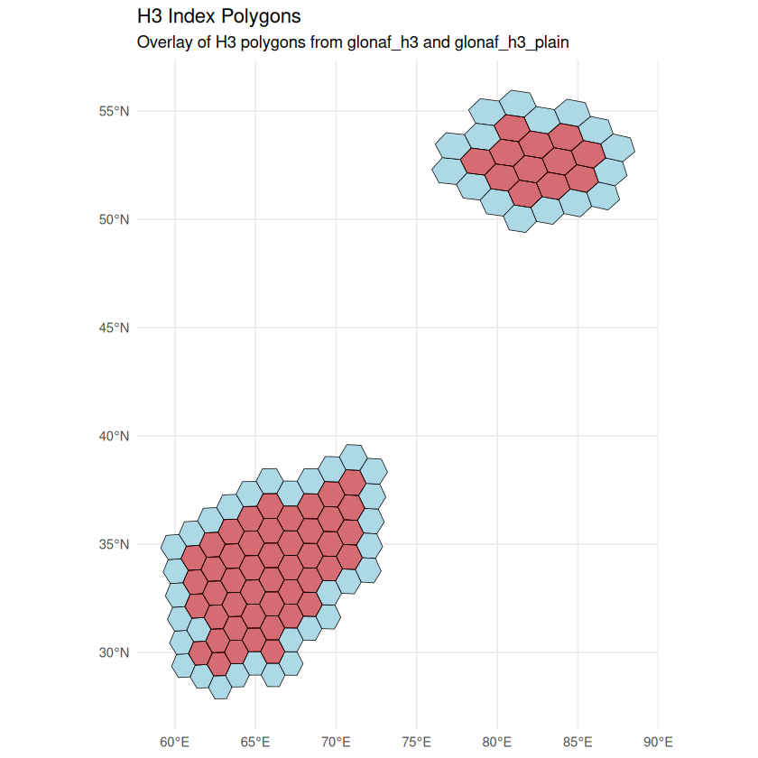
# Plotting of potentially problematic polygons (date line / wide bbox)
library(ggplot2)
library(dplyr)
library(sf)
library(h3)
crosses_date_line_or_spans_globe <- function(polygon) {
bb <- st_bbox(polygon)
(bb["xmax"] - bb["xmin"]) > 180 || bb["xmin"] < -180 || bb["xmax"] > 180
}
# Optionally wrap geometries that cross the dateline
glonaf_shapes_wrapped <- st_wrap_dateline(glonaf_shapes, options = c("WRAPDATELINE","DATELINEOFFSET"), quiet = TRUE)
# Use wrapped geometries for polyfill to reduce oddities (only if you want to recompute)
# glonaf_h3$geometry <- glonaf_shapes_wrapped$geometry
filtered_polygons <- glonaf_h3 %>%
filter(sapply(geometry, crosses_date_line_or_spans_globe))
h3_vec_to_sf <- function(h3_vec) {
h3_vec <- unique(h3_vec)
h3_vec <- h3_vec[!is.na(h3_vec) & nzchar(h3_vec)]
if (!length(h3_vec)) return(NULL)
# one index at a time
parts <- lapply(h3_vec, function(ix) {
# try-catch to skip any malformed index
tryCatch(h3::h3_to_geo_boundary_sf(ix), error = function(e) NULL)
})
parts <- Filter(Negate(is.null), parts)
if (!length(parts)) return(NULL)
do.call(rbind, parts)
}
for (i in seq_len(nrow(filtered_polygons))) {
polygon <- filtered_polygons[i, ]
idx_base <- unlist(polygon$h3_indexes, use.names = FALSE)
idx_k1 <- unlist(polygon$h3_indexes_k1, use.names = FALSE)
# Filter out hexagons that cross the date line
idx_base <- idx_base[!sapply(idx_base, function(ix) {
h3_polygon <- h3::h3_to_geo_boundary_sf(ix)
crosses_date_line_or_spans_globe(h3_polygon)
})]
idx_k1 <- idx_k1[!sapply(idx_k1, function(ix) {
h3_polygon <- h3::h3_to_geo_boundary_sf(ix)
crosses_date_line_or_spans_globe(h3_polygon)
})]
h3_polygons_base <- h3_vec_to_sf(idx_base)
h3_polygons_k1 <- h3_vec_to_sf(idx_k1)
if (is.null(h3_polygons_k1) || is.null(h3_polygons_base)) {
message("Skipping OBJIDsic=", polygon$OBJIDsic, " (no valid H3 cells)")
next
}
p <- ggplot() +
geom_sf(data = h3_polygons_k1, fill = "lightblue", color = "black", linewidth = 0.2) +
geom_sf(data = h3_polygons_base, fill = "red", color = "black", alpha = 0.5, linewidth = 0.15) +
theme_minimal() +
labs(
title = paste("H3 coverage (k=1) vs base for OBJIDsic", polygon$OBJIDsic),
subtitle = "Light blue = base + neighbors; Red = base"
) +
coord_sf()
print(p)
}
Attaching package: ‘h3’
The following object is masked from ‘package:purrr’:
compact
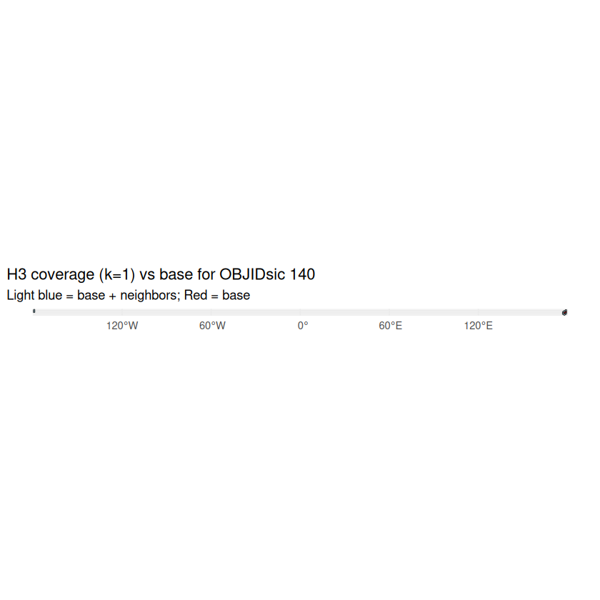
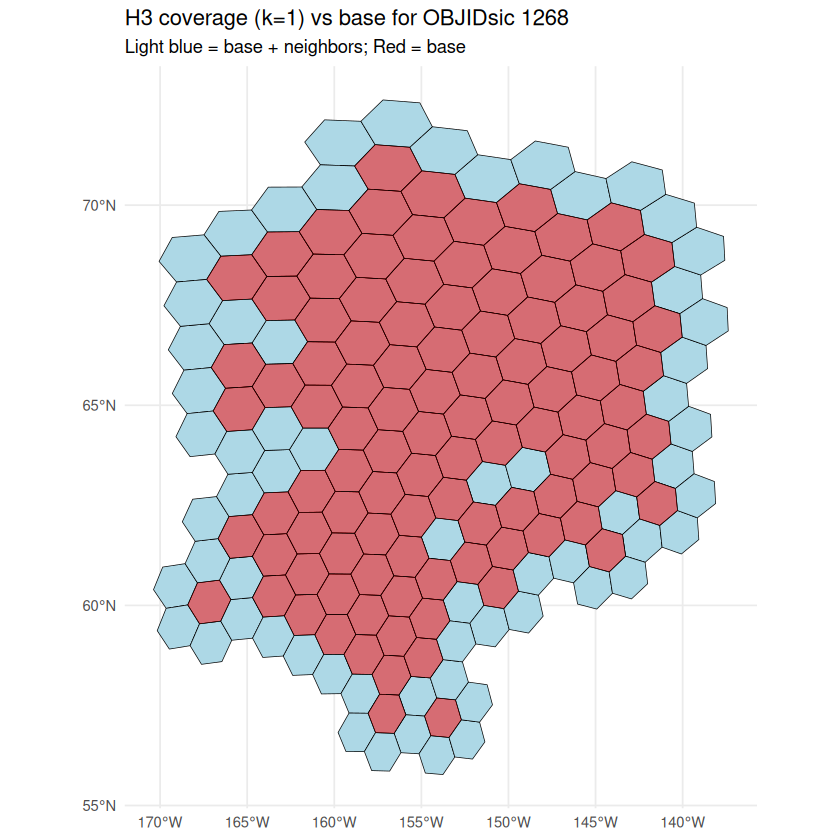
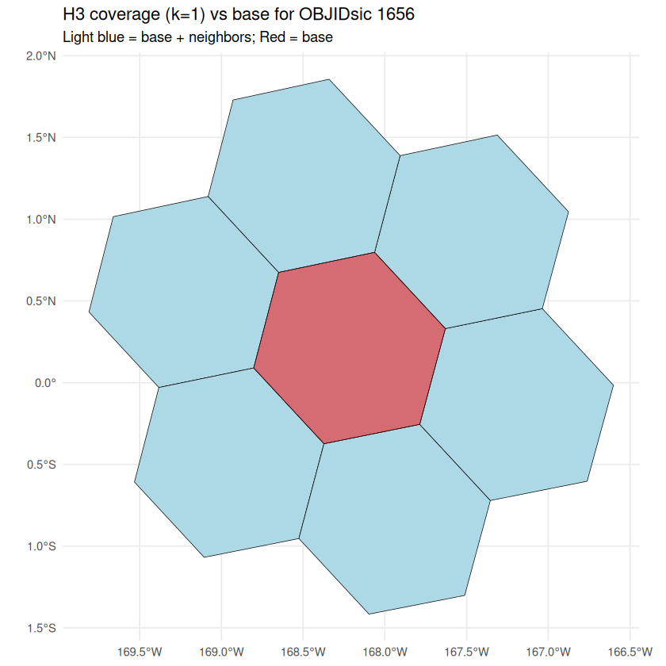
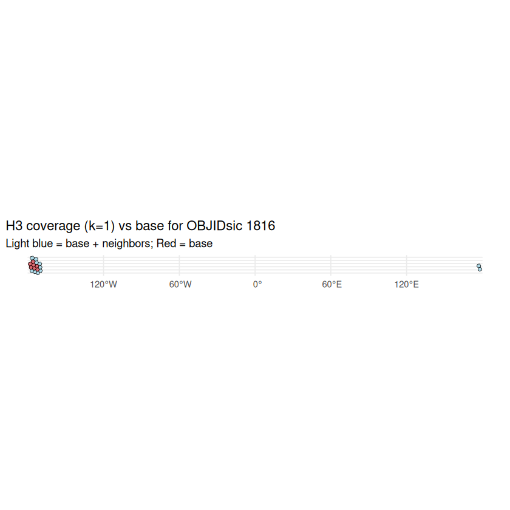
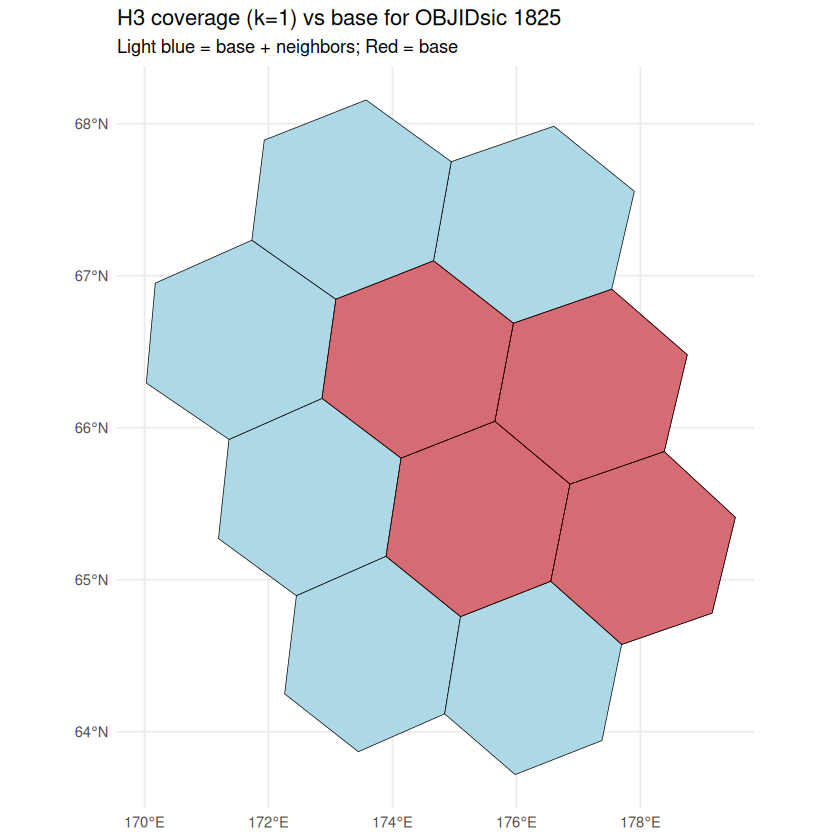
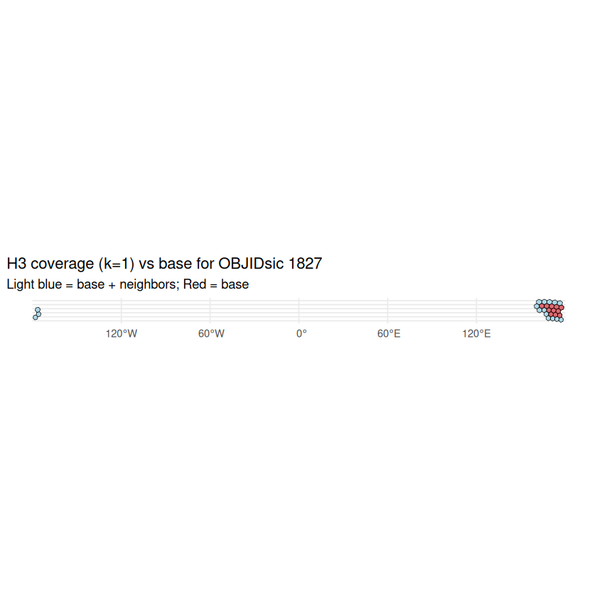
# Filter out rows with empty h3_indexes (i.e., empty lists)
glonaf_h3_filtered <- glonaf_h3 %>%
filter(lengths(h3_indexes_k1) == 0) # Keeps only rows with non-empty h3_indexes
ggplot(data = glonaf_h3_filtered) +
geom_sf(fill = "lightblue", color = "black") +
theme_minimal() +
labs(title = "Polygons from GloNAF",
subtitle = "Visualizing region polgons that don't intersect with h3 polygon") +
coord_sf() # Adjust the map projection if necessary
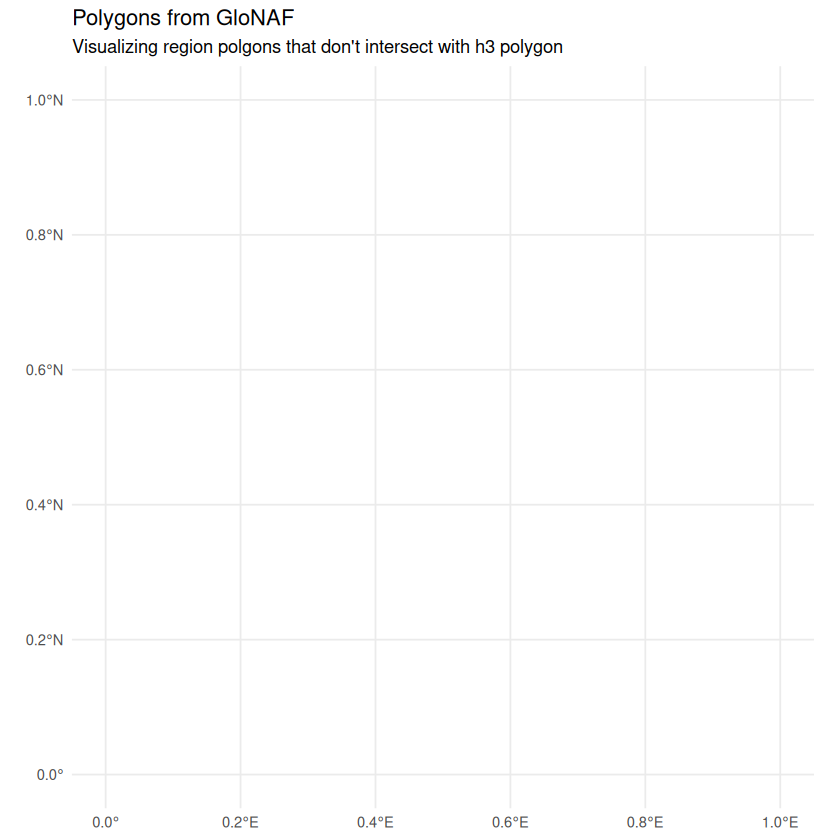
WCVP Data#
.libPaths(c("/net/home/swolf/R/x86_64-pc-linux-gnu-library/4.4", .libPaths()))
library(data.table)
dtn = 10
setDTthreads(threads = dtn) #defines how many threads data.table is allowed to use
Load WCVP Data#
#read csv TRY_GloNAF_GBIF_matching_growthForm_Sophie_2025-09-16
status_match <- fread("../../Data/TRY_GloNAF_GBIF_matching_growthForm_Sophie_2025-09-16")
head(status_match)
| TRY_name | GloNAF_name | nameIn | authorsIn | familyWCVP | statusWCVP | nameInWCVP | authorsInWCVP | nameOutWCVP | authorsOutWCVP | ⋯ | canonicalNameGBIF | rankGBIF | authorshipGBIF | familyGBIF | orderGBIF | classGBIF | phylumGBIF | kingdomGBIF | woodiness | growthForm |
|---|---|---|---|---|---|---|---|---|---|---|---|---|---|---|---|---|---|---|---|---|
| <chr> | <chr> | <chr> | <chr> | <chr> | <chr> | <chr> | <chr> | <chr> | <chr> | ⋯ | <chr> | <chr> | <chr> | <chr> | <chr> | <chr> | <chr> | <chr> | <chr> | <chr> |
| ACAENA NOVAE-ZELANDIAE | Acaena novae-zelandiae | Rosaceae | accepted | Acaena novaezelandiae | Kirk | Acaena novaezelandiae | Kirk | ⋯ | Acaena novae-zelandiae | SPECIES | Kirk | Rosaceae | Rosales | Magnoliopsida | Tracheophyta | Plantae | woody | herb | ||
| ADIANTUM CAPILLUS-VENERIS | Adiantum capillus-veneris | Pteridaceae | accepted | Adiantum capillusveneris | L. | Adiantum capillusveneris | L. | ⋯ | Adiantum capillus-veneris | SPECIES | L. | Pteridaceae | Polypodiales | Polypodiopsida | Tracheophyta | Plantae | non-woody | pteridophyte | ||
| ALISMA PLANTAGO-AQUATICA | Alisma plantago-aquatica | Alismataceae | accepted | Alisma plantagoaquatica | L. | Alisma plantagoaquatica | L. | ⋯ | Alisma plantago-aquatica | SPECIES | L. | Alismataceae | Alismatales | Liliopsida | Tracheophyta | Plantae | non-woody | herb | ||
| APERA SPICA-VENTI | Apera spica-venti | Poaceae | accepted | Apera spicaventi | (L.) P.Beauv. | Apera spicaventi | (L.) P.Beauv. | ⋯ | Apera spica-venti | SPECIES | (L.) P.Beauv. | Poaceae | Poales | Liliopsida | Tracheophyta | Plantae | non-woody | herb | ||
| ARCTOSTAPHYLOS UVA-URSI | Arctostaphylos uva-ursi | Ericaceae | accepted | Arctostaphylos uvaursi | (L.) Spreng. | Arctostaphylos uvaursi | (L.) Spreng. | ⋯ | Arctostaphylos uva-ursi | SPECIES | (L.) Spreng. | Ericaceae | Ericales | Magnoliopsida | Tracheophyta | Plantae | woody | shrub | ||
| ATROPA BELLA-DONNA | Atropa bella-donna | Solanaceae | accepted | Atropa belladonna | L. | Atropa belladonna | L. | ⋯ | Atropa belladonna | SPECIES | L. | Solanaceae | Solanales | Magnoliopsida | Tracheophyta | Plantae | non-woody | shrub |
colnames(status_match)
- 'TRY_name'
- 'GloNAF_name'
- 'nameIn'
- 'authorsIn'
- 'familyWCVP'
- 'statusWCVP'
- 'nameInWCVP'
- 'authorsInWCVP'
- 'nameOutWCVP'
- 'authorsOutWCVP'
- 'rowWCVP'
- 'diffGenWCVP'
- 'diffSpecWCVP'
- 'diffRestWCVP'
- 'diffAuthorsWCVP'
- 'distWCVP'
- 'distWCVPInt'
- 'GBIFKeyGBIF'
- 'searchTypeGBIF'
- 'synonymGBIF'
- 'matchNameGBIF'
- 'matchedScientificNameGBIF'
- 'matchedCanonicalNameGBIF'
- 'matchedAuthorshipGBIF'
- 'diffGenGBIF'
- 'diffSpecGBIF'
- 'diffRestGBIF'
- 'diffAuthorsGBIF'
- 'timeGBIF'
- 'scientificNameGBIF'
- 'canonicalNameGBIF'
- 'rankGBIF'
- 'authorshipGBIF'
- 'familyGBIF'
- 'orderGBIF'
- 'classGBIF'
- 'phylumGBIF'
- 'kingdomGBIF'
- 'woodiness'
- 'growthForm'
# subset status_match to 'GBIFKeyGBIF' 'woodiness''growthForm' distWCVP distWCVPInt
status_match_subset <- status_match %>%
select(GBIFKeyGBIF, woodiness, growthForm, distWCVP, distWCVPInt)
head(status_match_subset)
| GBIFKeyGBIF | woodiness | growthForm | distWCVP | distWCVPInt |
|---|---|---|---|---|
| <int> | <chr> | <chr> | <chr> | <chr> |
| 5370755 | woody | herb | NWG NSW QLD SOA TAS VIC WAU ATP CTM NZN NZS | GRB IRE ORE CAL |
| 2651816 | non-woody | pteridophyte | GRB IRE SWI BAL COR FRA POR SAR SPA ALB BUL GRC ITA KRI SIC TUE YUG KRY ALG EGY LBY MOR TUN AZO CNY CVI MDR MLI MTN NGA NGR SEN ZAI CHA DJI ETH SOC SOM SUD KEN TAN UGA ANG MLW MOZ ZAM ZIM BOT CPP LES NAM NAT OFS SWZ COM MAU MDG REU ROD KAZ TZK UZB NCS TCS AFG CYP IRN IRQ LBS PAL SIN TUR GST OMA SAU YEM CHC CHN CHS CHT JAP KOR NNS TAI ASS BAN EHM IND NEP PAK SRL WHM CBD LAO MYA THA VIE LSI MLY PHI NSW NTA QLD SOA VIC WAU FIJ NWC SAM TON SCI TUB HAW BRC COL MSO OKL SDA NWY OHI ARI CAL NEV UTA NWM TEX ALA ARK FLA GEO KTY LOU MRY MSI NCA SCA TEN VRG MXC MXE MXG MXN MXS MXT BLZ GUA HON BAH CUB HAI JAM PUE TRT WIN VEN PER BZE BZL BZN BZS CLC CLN | AUT BGM CZE GER NET |
| 2865100 | non-woody | herb | DEN FIN GRB IRE NOR SWE AUT BGM CZE GER HUN NET POL SWI BAL COR FRA POR SAR SPA ALB BUL GRC ITA KRI ROM SIC TUE YUG BLR BLT KRY RUC RUE RUN RUS RUW UKR ALG EGY MOR BUR RWA ZAI ERI ETH SUD KEN TAN UGA ALT BRY CTA IRK KRA TVA WSB YAK AMU KAM KHA PRM SAK KAZ KGZ TZK UZB NCS TCS AFG EAI IRN IRQ LBS PAL TUR CHC CHI CHM CHN CHQ CHS CHX MON JAP KOR ASS BAN EHM NEP PAK WHM MYA THA VIE | ANG ZIM CPP NAT OFS TVL NSW QLD SOA TAS VIC NZN NZS ASK AGS CLC |
| 5289642 | non-woody | herb | DEN AUT BGM CZE GER HUN NET POL SWI FRA SAR SPA ALB BUL GRC ITA ROM TUE YUG BLR KRY RUC RUE RUS RUW UKR ALG EGY LBY MOR TUN CNY MDR MTN BRY IRK KRA TVA WSB YAK KAZ NCS TCS EAI IRN TUR | FIN GRB IRE NOR SWE COR BLT RUN KHA PRM SAK ONT IDA ORE WAS MSO CNT MAI MAS MIC NWY OHI PEN VER CAL TEX DEL KTY MRY WDC |
| 2882580 | woody | shrub | DEN FIN GRB ICE IRE NOR SWE AUT CZE GER NET POL SWI FRA SPA ALB BUL GRC ITA ROM YUG BLR BLT RUC RUE RUN RUW UKR BRY CTA IRK KRA WSB YAK AMU KHA SAK MON ALU ASK GNL NUN NWT YUK ABT BRC MAN SAS LAB NFL NSC ONT PEI QUE COL IDA MNT ORE WAS WYO ILL IOW MIN NDA SDA WIS CNT INI MAI MAS MIC NWH NWJ NWY OHI PEN RHO VER WVA ARI CAL NEV UTA NWM DEL MRY VRG | |
| 3802655 | non-woody | shrub | GRB AUT BGM CZE GER HUN NET POL SWI COR FRA POR SAR SPA ALB BUL GRC ITA ROM SIC TUE YUG KRY UKR ALG MOR NCS TCS IRN LBS TUR | DEN IRE SWE BLT CHS SOA NZS WAS ILL MSO MIC NWJ CAL |
setnames(status_match_subset, "GBIFKeyGBIF", "speciesKey")
head(status_match_subset)
| speciesKey | woodiness | growthForm | distWCVP | distWCVPInt |
|---|---|---|---|---|
| <int> | <chr> | <chr> | <chr> | <chr> |
| 5370755 | woody | herb | NWG NSW QLD SOA TAS VIC WAU ATP CTM NZN NZS | GRB IRE ORE CAL |
| 2651816 | non-woody | pteridophyte | GRB IRE SWI BAL COR FRA POR SAR SPA ALB BUL GRC ITA KRI SIC TUE YUG KRY ALG EGY LBY MOR TUN AZO CNY CVI MDR MLI MTN NGA NGR SEN ZAI CHA DJI ETH SOC SOM SUD KEN TAN UGA ANG MLW MOZ ZAM ZIM BOT CPP LES NAM NAT OFS SWZ COM MAU MDG REU ROD KAZ TZK UZB NCS TCS AFG CYP IRN IRQ LBS PAL SIN TUR GST OMA SAU YEM CHC CHN CHS CHT JAP KOR NNS TAI ASS BAN EHM IND NEP PAK SRL WHM CBD LAO MYA THA VIE LSI MLY PHI NSW NTA QLD SOA VIC WAU FIJ NWC SAM TON SCI TUB HAW BRC COL MSO OKL SDA NWY OHI ARI CAL NEV UTA NWM TEX ALA ARK FLA GEO KTY LOU MRY MSI NCA SCA TEN VRG MXC MXE MXG MXN MXS MXT BLZ GUA HON BAH CUB HAI JAM PUE TRT WIN VEN PER BZE BZL BZN BZS CLC CLN | AUT BGM CZE GER NET |
| 2865100 | non-woody | herb | DEN FIN GRB IRE NOR SWE AUT BGM CZE GER HUN NET POL SWI BAL COR FRA POR SAR SPA ALB BUL GRC ITA KRI ROM SIC TUE YUG BLR BLT KRY RUC RUE RUN RUS RUW UKR ALG EGY MOR BUR RWA ZAI ERI ETH SUD KEN TAN UGA ALT BRY CTA IRK KRA TVA WSB YAK AMU KAM KHA PRM SAK KAZ KGZ TZK UZB NCS TCS AFG EAI IRN IRQ LBS PAL TUR CHC CHI CHM CHN CHQ CHS CHX MON JAP KOR ASS BAN EHM NEP PAK WHM MYA THA VIE | ANG ZIM CPP NAT OFS TVL NSW QLD SOA TAS VIC NZN NZS ASK AGS CLC |
| 5289642 | non-woody | herb | DEN AUT BGM CZE GER HUN NET POL SWI FRA SAR SPA ALB BUL GRC ITA ROM TUE YUG BLR KRY RUC RUE RUS RUW UKR ALG EGY LBY MOR TUN CNY MDR MTN BRY IRK KRA TVA WSB YAK KAZ NCS TCS EAI IRN TUR | FIN GRB IRE NOR SWE COR BLT RUN KHA PRM SAK ONT IDA ORE WAS MSO CNT MAI MAS MIC NWY OHI PEN VER CAL TEX DEL KTY MRY WDC |
| 2882580 | woody | shrub | DEN FIN GRB ICE IRE NOR SWE AUT CZE GER NET POL SWI FRA SPA ALB BUL GRC ITA ROM YUG BLR BLT RUC RUE RUN RUW UKR BRY CTA IRK KRA WSB YAK AMU KHA SAK MON ALU ASK GNL NUN NWT YUK ABT BRC MAN SAS LAB NFL NSC ONT PEI QUE COL IDA MNT ORE WAS WYO ILL IOW MIN NDA SDA WIS CNT INI MAI MAS MIC NWH NWJ NWY OHI PEN RHO VER WVA ARI CAL NEV UTA NWM DEL MRY VRG | |
| 3802655 | non-woody | shrub | GRB AUT BGM CZE GER HUN NET POL SWI COR FRA POR SAR SPA ALB BUL GRC ITA ROM SIC TUE YUG KRY UKR ALG MOR NCS TCS IRN LBS TUR | DEN IRE SWE BLT CHS SOA NZS WAS ILL MSO MIC NWJ CAL |
library(dplyr)
library(tidyr)
library(stringr)
# 1) Prepare WCVP in long format
wcvp_sp_long <- status_match_subset %>%
mutate(
# split string into vector
distWCVP = str_split(as.character(distWCVP), "\\s+"),
# rename early so unnest carries the name
LEVEL3_COD = distWCVP
) %>%
select(speciesKey, woodiness, growthForm, LEVEL3_COD) %>%
unnest(LEVEL3_COD) %>%
mutate(LEVEL3_COD = toupper(trimws(LEVEL3_COD))) %>%
distinct()
head(wcvp_sp_long)
| speciesKey | woodiness | growthForm | LEVEL3_COD |
|---|---|---|---|
| <int> | <chr> | <chr> | <chr> |
| 5370755 | woody | herb | NWG |
| 5370755 | woody | herb | NSW |
| 5370755 | woody | herb | QLD |
| 5370755 | woody | herb | SOA |
| 5370755 | woody | herb | TAS |
| 5370755 | woody | herb | VIC |
# remove duplicates in wcvp_sp_long
wcvp_sp_long <- wcvp_sp_long %>%
distinct()
head(wcvp_sp_long)
| speciesKey | woodiness | growthForm | LEVEL3_COD |
|---|---|---|---|
| <int> | <chr> | <chr> | <chr> |
| 5370755 | woody | herb | NWG |
| 5370755 | woody | herb | NSW |
| 5370755 | woody | herb | QLD |
| 5370755 | woody | herb | SOA |
| 5370755 | woody | herb | TAS |
| 5370755 | woody | herb | VIC |
library(dplyr)
library(tidyr)
library(stringr)
# 1) Prepare WCVP in long format
wcvp_sp_long_int <- status_match_subset %>%
mutate(
# split string into vector
distWCVPInt = str_split(as.character(distWCVPInt), "\\s+"),
# rename early so unnest carries the name
LEVEL3_COD = distWCVPInt
) %>%
select(speciesKey, woodiness, growthForm, LEVEL3_COD) %>%
unnest(LEVEL3_COD) %>%
mutate(LEVEL3_COD = toupper(trimws(LEVEL3_COD))) %>%
distinct()
head(wcvp_sp_long_int)
| speciesKey | woodiness | growthForm | LEVEL3_COD |
|---|---|---|---|
| <int> | <chr> | <chr> | <chr> |
| 5370755 | woody | herb | GRB |
| 5370755 | woody | herb | IRE |
| 5370755 | woody | herb | ORE |
| 5370755 | woody | herb | CAL |
| 2651816 | non-woody | pteridophyte | AUT |
| 2651816 | non-woody | pteridophyte | BGM |
# add column and make all "native" wcvp_sp_long
wcvp_sp_long <- wcvp_sp_long %>%
mutate(status_flag_wcvp = "native")
# add column and make all "non-native" wcvp_sp_long_int
wcvp_sp_long_int <- wcvp_sp_long_int %>%
mutate(status_flag_wcvp = "non-native")
# concatenate both dataframes
wcvp_sp_long <- rbind(wcvp_sp_long, wcvp_sp_long_int)
head(wcvp_sp_long)
| speciesKey | woodiness | growthForm | LEVEL3_COD | status_flag_wcvp |
|---|---|---|---|---|
| <int> | <chr> | <chr> | <chr> | <chr> |
| 5370755 | woody | herb | NWG | native |
| 5370755 | woody | herb | NSW | native |
| 5370755 | woody | herb | QLD | native |
| 5370755 | woody | herb | SOA | native |
| 5370755 | woody | herb | TAS | native |
| 5370755 | woody | herb | VIC | native |
# remove duplicates in wcvp_sp_long
wcvp_sp_long <- wcvp_sp_long %>%
distinct()
# install if needed
#install.packages("rWCVP")
library(rWCVP)
library(sf)
# Load the level 3 polygon sf object
tdwg3 <- wgsrpd3 # this is included in the package
plot(st_geometry(tdwg3))
The package `rWCVPdata` is not installed.
You will need to either:
• run `remotes::install_github('matildabrown/rWCVPdata')`
• pass a local WCVP using `wcvp_names` and `wcvp_distributions`
print(tdwg3)
Simple feature collection with 369 features and 4 fields
Geometry type: GEOMETRY
Dimension: XY
Bounding box: xmin: -180 ymin: -90 xmax: 180 ymax: 83.62361
Geodetic CRS: WGS 84
First 10 features:
LEVEL3_NAM LEVEL3_COD LEVEL2_COD LEVEL1_COD
1 Alberta ABT 71 7
2 Afghanistan AFG 34 3
3 Argentina Northeast AGE 85 8
4 Argentina South AGS 85 8
5 Argentina Northwest AGW 85 8
6 Alabama ALA 78 7
7 Albania ALB 13 1
8 Aldabra ALD 29 2
9 Algeria ALG 20 2
10 Altay ALT 30 3
geometry
1 POLYGON ((-114.8644 50.4263...
2 POLYGON ((71.26777 38.30211...
3 MULTIPOLYGON (((-61.66776 -...
4 MULTIPOLYGON (((-70.37476 -...
5 POLYGON ((-65.73416 -22.113...
6 MULTIPOLYGON (((-88.19554 3...
7 POLYGON ((19.76607 42.58551...
8 MULTIPOLYGON (((46.47607 -9...
9 POLYGON ((6.949974 36.88331...
10 POLYGON ((85.44717 54.19581...
WCVP polygon to h3 hexagons#
wcvp_h3 <- tdwg3 %>%
rowwise() %>%
mutate(
h3_indexes = {
pf <- h3::polyfill(geometry, res = 3)
if (length(pf) == 0) { # small polygons where the no h3_hexagon centroid fall within the polygon
# Fallback: use centroid
centroid <- sf::st_centroid(geometry)
coords <- sf::st_coordinates(centroid)
pf <- h3::geo_to_h3(matrix(coords[c(2,1)], nrow=1), res = 3) # lat, lon order
}
list(pf)
},
# Expand one ring as before
h3_indexes_k1 = list({
base <- h3_indexes
expanded <- unique(unlist(lapply(base, function(ix) h3::k_ring(ix))))
expanded
}),
h3_outer_ring = list(setdiff(h3_indexes_k1, h3_indexes))
) %>%
ungroup()
polygon has holes
polygon has holes
polygon has holes
polygon has holes
polygon has holes
polygon has holes
polygon has holes
polygon has holes
polygon has holes
polygon has holes
polygon has holes
polygon has holes
polygon has holes
library(ggplot2)
# Convert the first H3 index list to polygons from wcvp_h3
h3_polygon <- h3::h3_to_geo_boundary_sf(wcvp_h3$h3_indexes_k1[[1]])
# Plot the polygon
ggplot() +
geom_sf(data = h3_polygon, fill = "lightblue", color = "black") +
theme_minimal() +
labs(title = "H3 Index Polygon",
subtitle = "First polygon based on h3_indexes_k1 from wcvp_h3") +
coord_sf()
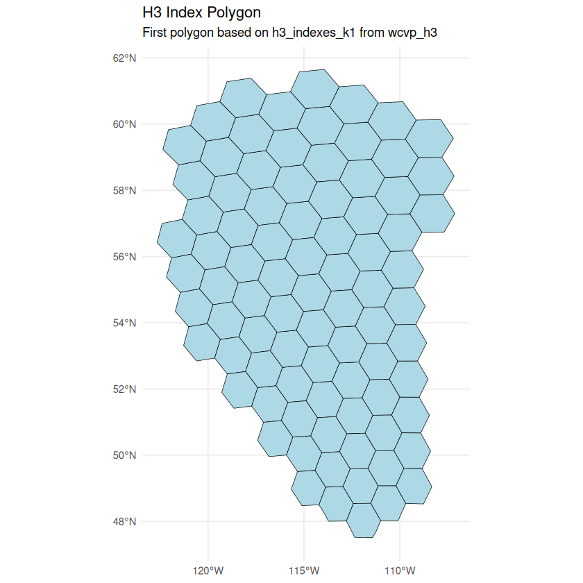
Load GloNAF TxR#
TxR_glonaf <- fread("../../Data/GloNAF2/glonaf_TxR_tax_harmony.csv")
setnames(TxR_glonaf, "GBIFKeyGBIF", "speciesKey")
head(TxR_glonaf)
| taxa_accepted | speciesKey | wcvp12_accepted_plant_name_id | ABW | AFG | AGO | AIA | ALB | AND | ARE | ⋯ | WSM.NUE | YEM | ZAF | ZMB | ZWE.C | ZWE.E | ZWE.N | ZWE.S | ZWE.W | frequency |
|---|---|---|---|---|---|---|---|---|---|---|---|---|---|---|---|---|---|---|---|---|
| <chr> | <int> | <dbl> | <int> | <int> | <int> | <int> | <int> | <int> | <int> | ⋯ | <int> | <int> | <int> | <int> | <int> | <int> | <int> | <int> | <int> | <int> |
| Abelia chinensis | 5599251 | 2609453 | 0 | 0 | 0 | 0 | 0 | 0 | 0 | ⋯ | 0 | 0 | 0 | 0 | 0 | 0 | 0 | 0 | 0 | 3 |
| Abelia grandiflora | 5599251 | 2609470 | 0 | 0 | 0 | 0 | 0 | 0 | 0 | ⋯ | 0 | 0 | 0 | 0 | 0 | 0 | 0 | 0 | 0 | 11 |
| Abelmoschus esculentus | 3152707 | 2609574 | 0 | 0 | 0 | 1 | 0 | 0 | 0 | ⋯ | 0 | 0 | 1 | 0 | 0 | 0 | 0 | 0 | 0 | 54 |
| Abelmoschus ficulneus | 3940858 | 2609577 | 0 | 0 | 0 | 0 | 0 | 0 | 0 | ⋯ | 0 | 0 | 0 | 0 | 0 | 0 | 0 | 0 | 0 | 9 |
| Abelmoschus manihot | 3152706 | 2609589 | 0 | 0 | 0 | 0 | 0 | 0 | 0 | ⋯ | 0 | 0 | 0 | 0 | 0 | 0 | 0 | 0 | 0 | 11 |
| Abelmoschus manihot subsp. manihot | 7279656 | 3261487 | 0 | 0 | 0 | 0 | 0 | 0 | 0 | ⋯ | 0 | 0 | 0 | 0 | 0 | 0 | 0 | 0 | 0 | 4 |
# Columns containing metadata rather than regional status values
exclude_cols <- c(
"taxa_accepted",
"wcvp12_accepted_plant_name_id",
"frequency"
)
# Convert regional status columns from wide to long format
species_status_long <- TxR_glonaf %>%
pivot_longer(
# Keep identifiers and metadata unchanged; reshape all regional columns
cols = -c(speciesKey, all_of(exclude_cols)),
names_to = "IDregion", # Original column name becomes the region ID
values_to = "status_flag" # Cell value becomes the status
) %>%
# Ensure region identifiers use a consistent character type
mutate(IDregion = as.character(IDregion)) %>%
# Retain only the columns needed for subsequent joins
select(speciesKey, IDregion, status_flag)
head(species_status_long)
| speciesKey | IDregion | status_flag |
|---|---|---|
| <int> | <chr> | <int> |
| 5599251 | ABW | 0 |
| 5599251 | AFG | 0 |
| 5599251 | AGO | 0 |
| 5599251 | AIA | 0 |
| 5599251 | ALB | 0 |
| 5599251 | AND | 0 |
Merge with GBIF observations#
.libPaths(c("/net/home/swolf/R/x86_64-pc-linux-gnu-library/4.4", .libPaths()))
library(data.table)
dtn = 30
setDTthreads(threads = dtn) #defines how many threads data.table is allowed to use
GBIF_sample <- fread("/net/scratch/swolf/GBIF/gbif_res4_res3_try6_cs.csv",
select = c("gbifID", "h3_res3", "speciesKey"))
head(GBIF_sample)
| gbifID | h3_res3 | speciesKey |
|---|---|---|
| <int64> | <chr> | <int> |
| 5167350772 | 838230fffffffff | 1204404 |
| 4987455975 | 838230fffffffff | 1204404 |
| 2445057444 | 83831efffffffff | 1204404 |
| 2851019390 | 83831efffffffff | 1204404 |
| 2465115388 | 838218fffffffff | 1204404 |
| 2988502417 | 838233fffffffff | 1204404 |
# split GBIF_sample into chunks to avoid memory issues
chunk_size <- 100000 # Adjust chunk size based on your system's memory capacity
num_chunks <- ceiling(nrow(GBIF_sample) / chunk_size)
GBIF_chunks <- split(GBIF_sample, rep(1:num_chunks, each = chunk_size, length.out = nrow(GBIF_sample)))
# for each GBIF_chunk, save GBIF_chunks to file as csv
for (i in seq_along(GBIF_chunks)) {
GBIF_chunk <- GBIF_chunks[[i]]
fwrite(GBIF_chunk, file = paste0("/net/scratch/swolf/GBIF/GBIF_CS_chunk_", i, ".csv"))
}
# check number of chunk files saved
length(list.files("/net/scratch/swolf/GBIF/", pattern = "GBIF_CS_chunk_.*\\.csv", full.names = TRUE))
642
library(dplyr)
library(tidyr)
# function to join with glonaf_h3 and wcvp REGIONS
merge_gbif_with_regions <- function(GBIF_data, glonaf_h3, wcvp_h3) {
# 1) Unnest the H3 neighborhoods so each region–cell pair is a row
glonaf_cells <- glonaf_h3 %>%
select(IDregion, h3_indexes_k1) %>% # only keep what we need
unnest_longer(h3_indexes_k1, values_to = "h3_res3") %>% # rename to match GBIF col
distinct(IDregion, h3_res3) # one row per region–cell
# 2) Join to GBIF_sample by h3_res3
gbif_with_region <- GBIF_data %>%
left_join(glonaf_cells, by = "h3_res3", relationship = "many-to-many")
# Merge with WCVP regions
wcvp_cells <- wcvp_h3 %>%
select(LEVEL3_COD, h3_indexes_k1) %>% # only keep what we need
unnest_longer(h3_indexes_k1, values_to = "h3_res3") %>% # rename to match GBIF col
distinct(LEVEL3_COD, h3_res3) # one row per region–cell
# 2) Join to WCVP region by h3_res3
gbif_with_region <- gbif_with_region %>%
left_join(wcvp_cells, by = "h3_res3", relationship = "many-to-many")
return(gbif_with_region)
}
# function to add STATUS
add_status_to_gbif <- function(gbif_with_region, species_status_long) {
# Merge with GBIF_regions
GBIF_GloNAF <- merge(gbif_with_region, species_status_long, by = c("speciesKey", "IDregion"), all.x = TRUE)
# remove duplicates
GBIF_GloNAF <- GBIF_GloNAF %>%
distinct()
GBIF_GloNAF_WCVP <- merge(GBIF_GloNAF, wcvp_sp_long, by = c("speciesKey", "LEVEL3_COD"), all.x = TRUE)
#if GBIF_GloNAF_WCVP$status_flag==1, change to "non-native"
GBIF_GloNAF_WCVP <- GBIF_GloNAF_WCVP %>%
mutate(status_flag = case_when(
status_flag == 1 ~ "non-native",
status_flag == 0 ~ "native",
TRUE ~ as.character(status_flag) # keep existing value if not 0 or 1
))
return(GBIF_GloNAF_WCVP)
}
# function to filter out duplicates
library(dplyr)
.libPaths(c("/net/home/swolf/R/x86_64-pc-linux-gnu-library/4.4", .libPaths()))
library(data.table)
filter_duplicates <- function(GBIF_GloNAF_WCVP) {
# drop woodiness and growthform columns
GBIF_GloNAF_WCVP <- GBIF_GloNAF_WCVP %>%
select(-c(woodiness, growthForm))
GBIF_GloNAF_WCVP_unique1 <- GBIF_GloNAF_WCVP %>%
distinct(
gbifID,
across(-c(IDregion, LEVEL3_COD)), # use all columns except IDregion & LEVEL3_COD for uniqueness
.keep_all = TRUE # preserve all columns
)
# Filter for rows where gbifID is not unique and sort by gbifID
GBIF_GloNAF_WCVP_dupl <- GBIF_GloNAF_WCVP_unique1[
, if (.N > 1) .SD, by = gbifID
][order(gbifID)]
DT <- as.data.table(GBIF_GloNAF_WCVP_dupl) # or use GBIF_GloNAF_WCVP_unique1
norm <- function(x) tolower(trimws(as.character(x)))
DT[, `:=`(
status_flag = norm(status_flag),
status_flag_wcvp = norm(status_flag_wcvp)
)]
levels2 <- c("native","non-native")
majority_by_id <- DT[, {
# all votes from both columns (ignore NA/"")
vals_all <- c(status_flag, status_flag_wcvp)
vals_all <- vals_all[vals_all %chin% levels2]
ca <- table(factor(vals_all, levels = levels2))
pick <- NA_character_
if (sum(ca) > 0) {
if (ca["native"] > ca["non-native"]) {
pick <- "native"
} else if (ca["non-native"] > ca["native"]) {
pick <- "non-native"
} else {
# tie across both -> check WCVP-only
w <- status_flag_wcvp[status_flag_wcvp %chin% levels2]
cw <- table(factor(w, levels = levels2))
if (sum(cw) > 0 && cw["native"] != cw["non-native"]) {
pick <- if (cw["native"] > cw["non-native"]) "native" else "non-native"
} else {
# WCVP empty or tied -> decide by status_flag-only
s <- status_flag[status_flag %chin% levels2]
cs <- table(factor(s, levels = levels2))
if (sum(cs) > 0) {
if (cs["native"] > cs["non-native"]) {
pick <- "native"
} else if (cs["non-native"] > cs["native"]) {
pick <- "non-native"
} else if (sum(cw) == 0) {
# WCVP empty/NA AND status_flag tied -> choose native
pick <- "native"
}
}
}
}
}
.(majority_status = pick)
}, by = gbifID] # change to by = .(gbifID, h3_res3) for per-hex voting
# Attach and keep rows matching the group majority using WCVP override as the row label
DT <- majority_by_id[DT, on = "gbifID"]
DT[, resolved := fifelse(!is.na(status_flag_wcvp) & nzchar(status_flag_wcvp),
status_flag_wcvp, status_flag)]
DT_majority_rows <- DT[resolved == majority_status]
# head(majority_by_id)
# merge GBIF_GloNAF_WCVP_dupl with majority_by_id to get majority_status column
GBIF_GloNAF_WCVP_dupl <- merge(GBIF_GloNAF_WCVP_dupl, majority_by_id, by = "gbifID", all.x = TRUE)
# drop from GBIF_GloNAF_WCVP_dupl: LEVEL3_COD, IDregion, status_flag, status_flag_wcvp
GBIF_GloNAF_WCVP_dupl <- GBIF_GloNAF_WCVP_dupl %>%
select(-c(LEVEL3_COD, IDregion, status_flag, status_flag_wcvp))
#remove duplicae rows from GBIF_GloNAF_WCVP_dupl
GBIF_GloNAF_WCVP_dupl <- GBIF_GloNAF_WCVP_dupl %>%
distinct()
# filter GBIF_GloNAF_WCVP_unique1 for gbifID not in GBIF_GloNAF_WCVP_dupl
GBIF_GloNAF_WCVP_unique_no_dupl <- GBIF_GloNAF_WCVP_unique1 %>%
filter(!gbifID %in% GBIF_GloNAF_WCVP_dupl$gbifID)
valid <- c("native","non-native")
GBIF_GloNAF_WCVP_unique_no_dupl <- GBIF_GloNAF_WCVP_unique_no_dupl %>%
mutate(
status_flag = tolower(trimws(as.character(status_flag))),
status_flag_wcvp = tolower(trimws(as.character(status_flag_wcvp))),
majority_status = case_when(
status_flag_wcvp %in% valid ~ status_flag_wcvp, # WCVP wins when present
status_flag %in% valid ~ status_flag, # fall back to status_flag
TRUE ~ NA_character_ # both missing/invalid
)
)
# drop from GBIF_GloNAF_WCVP_dupl: LEVEL3_COD, IDregion, status_flag, status_flag_wcvp
GBIF_GloNAF_WCVP_unique_no_dupl <- GBIF_GloNAF_WCVP_unique_no_dupl %>%
select(-c(LEVEL3_COD, IDregion, status_flag, status_flag_wcvp))
# rbind GBIF_GloNAF_WCVP_unique_no_dupl and GBIF_GloNAF_WCVP_dupl
GBIF_GloNAF_WCVP_final <- rbind(GBIF_GloNAF_WCVP_unique_no_dupl, GBIF_GloNAF_WCVP_dupl)
return(GBIF_GloNAF_WCVP_final)
}
Check work: does above algorthim succesfully determine the majority vote?
# merge GBIF_GloNAF_WCVP_dupl with majority_by_id to get majority_status column
GBIF_GloNAF_WCVP_dupl <- merge(GBIF_GloNAF_WCVP_dupl, majority_by_id, by = "gbifID", all.x = TRUE)
head(GBIF_GloNAF_WCVP_dupl, n = 100)
Code check with one chunk#
# check code for one chunk
# read chunk 120 from file
GBIF_chunk <- fread("/net/scratch/swolf/GBIF/GBIF_CS_chunk_120.csv")
#GBIF_chunk <- GBIF_chunks[[120]]
gbif_with_region <- merge_gbif_with_regions(GBIF_chunk, glonaf_h3, wcvp_h3)
gbif_with_status <- add_status_to_gbif(gbif_with_region, species_status_long)
gbif_filtered <- filter_duplicates(gbif_with_status)
rm(gbif_with_status)
rm(gbif_with_region)
head(gbif_filtered)
| speciesKey | gbifID | h3_res3 | majority_status |
|---|---|---|---|
| <int> | <int64> | <chr> | <chr> |
| 2913130 | 4946177954 | 831928fffffffff | NA |
| 2913130 | 2988323206 | 83214bfffffffff | native |
| 2913130 | 3953974921 | 830bb4fffffffff | native |
| 2913130 | 3330696474 | 830bb2fffffffff | native |
| 2913130 | 4903881625 | 830bb0fffffffff | native |
| 2913130 | 2823249159 | 832069fffffffff | native |
dim(gbif_filtered)
- 100000
- 4
# get most common speciesKey with counts for native and non-native statuses
most_common_species <- gbif_filtered %>%
group_by(speciesKey) %>%
summarise(
total_count = n(),
native_count = sum(majority_status == "native", na.rm = TRUE),
non_native_count = sum(majority_status == "non-native", na.rm = TRUE)
) %>%
arrange(desc(non_native_count)) %>%
slice_head(n = 3)
head(most_common_species, 10 )
| speciesKey | total_count | native_count | non_native_count |
|---|---|---|---|
| <int> | <int> | <int> | <int> |
| 2913548 | 69987 | 42790 | 27142 |
| 2913169 | 420 | 286 | 134 |
| 2913214 | 1226 | 1197 | 29 |
# Plot percentage of status == "non-native" per h3_res3
library(ggplot2)
top_species <- most_common_species$speciesKey
plots <- lapply(top_species, function(species) {
species_data <- gbif_filtered %>%
filter(speciesKey == species) %>%
group_by(h3_res3) %>%
summarise(
non_native_count = sum(majority_status == "non-native", na.rm = TRUE),
total_count = sum(!is.na(majority_status)),
non_native_percentage = (non_native_count / total_count) * 100
)
ggplot() +
geom_sf(data = rnaturalearth::ne_countries(scale = "medium", returnclass = "sf"),
fill = "grey80", color = "white") +
geom_sf(data = h3::h3_to_geo_boundary_sf(species_data$h3_res3),
aes(fill = species_data$non_native_percentage), color = NA) +
scale_fill_viridis_c(option = "plasma", name = "Non-Native (%)") +
theme_minimal() +
labs(title = paste("Global Map of Non-Native Percentage for Species Key", species),
fill = "Non-Native (%)")
})
# Display the first plot as an example
print(plots)
[[1]]
[[2]]
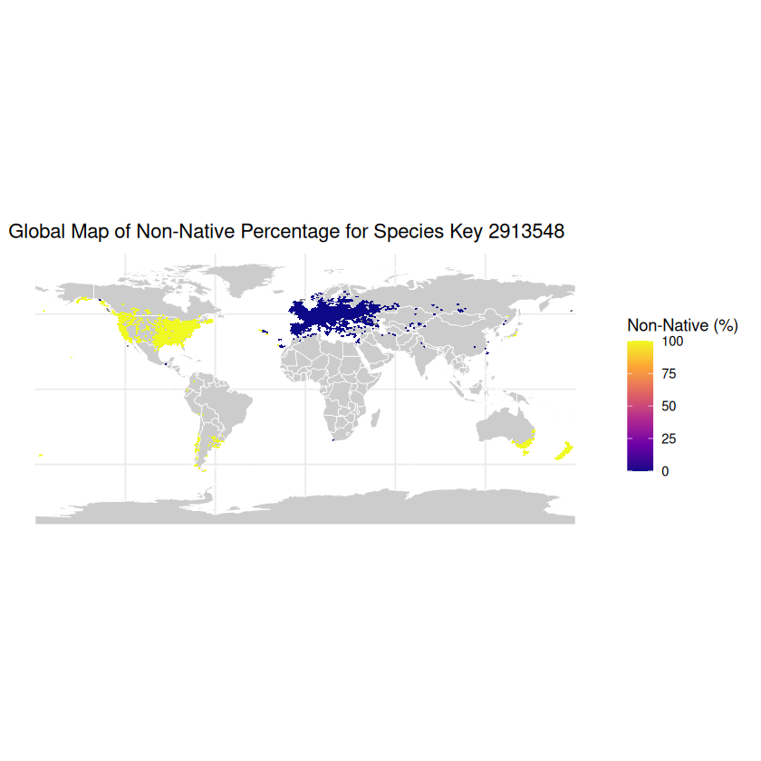
[[3]]
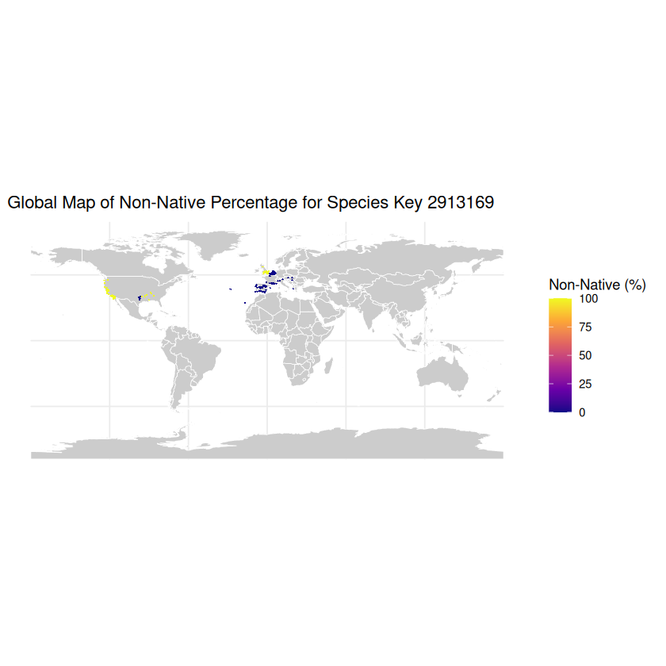
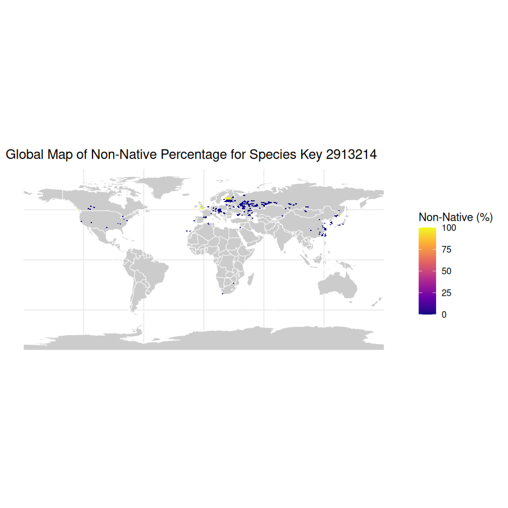
# summary of majority_status
table(gbif_filtered$majority_status, useNA = "ifany")
native non-native <NA>
71964 27342 694
Run for all observations#
library(parallel)
library(data.table)
process_chunk <- function(i) {
message("Processing chunk ", i)
# Read the chunk
GBIF_chunk <- fread(paste0("/net/scratch/swolf/GBIF/GBIF_CS_chunk_", i, ".csv"))
# Apply your custom processing pipeline
gbif_with_region <- merge_gbif_with_regions(GBIF_chunk, glonaf_h3, wcvp_h3)
gbif_with_status <- add_status_to_gbif(gbif_with_region, species_status_long)
gbif_filtered <- filter_duplicates(gbif_with_status)
# Memory cleanup
rm(gbif_with_status, gbif_with_region, GBIF_chunk)
gc()
# Save results
out_path <- paste0("/net/scratch/swolf/GBIF/GBIF_GloNAF_WCVP_status_unique_CS_", i, ".csv")
fwrite(gbif_filtered, out_path)
rm(gbif_filtered)
gc()
return(paste("Chunk", i, "done"))
}
# Number of chunks and cores
chunk_ids <- 1:num_chunks # adjust as needed
#chunk_ids <- c(29:31)
num_cores <- 30 # leave one or two cores free if the server is shared
# Run in parallel using forked processes (no need for exports)
results <- mclapply(chunk_ids, function(i) {
tryCatch(
process_chunk(i),
error = function(e) {
message("Error in chunk ", i, ": ", conditionMessage(e))
return(paste("Chunk", i, "failed"))
}
)
}, mc.cores = num_cores)
print(results)
# Merge all processed chunks into a single file
message("Merging all chunks...")
merged_data <- rbindlist(
lapply(chunk_ids, function(i) {
path <- paste0("/net/scratch/swolf/GBIF/GBIF_GloNAF_WCVP_status_unique_CS_", i, ".csv")
if (file.exists(path)) {
fread(path)
} else {
warning("Missing chunk file: ", path)
NULL
}
}),
use.names = TRUE,
fill = TRUE
)
message("Total rows merged: ", nrow(merged_data))
# Save merged output
fwrite(merged_data, "/net/scratch/swolf/GBIF/GBIF_GloNAF_WCVP_status_unique_CS_all.csv")
message("Merged file saved.")
Merging all chunks...
Total rows merged: 64141357
Merged file saved.
Add Woodiness#
woodiness <- wcvp_sp_long %>%
select(woodiness, speciesKey) %>%
distinct()
head(woodiness)
| woodiness | speciesKey |
|---|---|
| <chr> | <int> |
| woody | 5370755 |
| non-woody | 2651816 |
| non-woody | 2865100 |
| non-woody | 5289642 |
| woody | 2882580 |
| non-woody | 3802655 |
#delete rows with NA or "" in woodiness and growthForm
woodiness <- woodiness %>%
#filter(!is.na(woodiness) & nzchar(woodiness) & !is.na(growthForm) & nzchar(growthForm))
filter(!is.na(woodiness) & nzchar(woodiness)) %>%
distinct()
length(unique(woodiness$speciesKey))
51973
length(woodiness$speciesKey)
51998
stats_woodiness <- woodiness %>%
group_by(woodiness) %>%
summarise(count = n_distinct(speciesKey)) %>%
arrange(desc(count))
stats_woodiness
| woodiness | count |
|---|---|
| <chr> | <int> |
| woody | 31751 |
| non-woody | 20159 |
| semi-woody | 88 |
# print duplicates in woodiness
woodiness_duplicates <- woodiness %>%
group_by(speciesKey) %>%
filter(n() > 1) %>%
arrange(speciesKey)
woodiness_duplicates
| woodiness | speciesKey |
|---|---|
| <chr> | <int> |
| woody | 2701052 |
| non-woody | 2701052 |
| woody | 2703325 |
| non-woody | 2703325 |
| non-woody | 2721893 |
| woody | 2721893 |
| non-woody | 2794881 |
| woody | 2794881 |
| woody | 2918700 |
| non-woody | 2918700 |
| non-woody | 2949250 |
| woody | 2949250 |
| woody | 3083576 |
| non-woody | 3083576 |
| woody | 3084023 |
| non-woody | 3084023 |
| woody | 3093682 |
| non-woody | 3093682 |
| non-woody | 3100573 |
| woody | 3100573 |
| non-woody | 3118430 |
| woody | 3118430 |
| non-woody | 3119618 |
| woody | 3119618 |
| woody | 3149747 |
| non-woody | 3149747 |
| non-woody | 3152374 |
| woody | 3152374 |
| non-woody | 3169790 |
| woody | 3169790 |
| woody | 3172047 |
| non-woody | 3172047 |
| non-woody | 4090205 |
| woody | 4090205 |
| woody | 5384048 |
| non-woody | 5384048 |
| woody | 7126693 |
| non-woody | 7126693 |
| non-woody | 7148551 |
| woody | 7148551 |
| woody | 7322650 |
| non-woody | 7322650 |
| non-woody | 7324560 |
| woody | 7324560 |
| non-woody | 7480365 |
| woody | 7480365 |
| non-woody | 7672574 |
| woody | 7672574 |
| woody | 9587676 |
| non-woody | 9587676 |
# remove duplicates in woodiness, delete both
woodiness <- woodiness %>%
group_by(speciesKey) %>%
filter(n() == 1) %>%
ungroup()
# merge woodiness with GBIF_GloNAF_WCVP_final by gbifID
GBIF_GloNAF_WCVP_final_woody <- merge(GBIF_GloNAF_WCVP_final, woodiness, by = "speciesKey", all.x = TRUE)
head(GBIF_GloNAF_WCVP_final_woody)
| speciesKey | gbifID | h3_res3 | majority_status | woodiness |
|---|---|---|---|---|
| <int> | <int64> | <chr> | <chr> | <chr> |
| 1204404 | 5167350772 | 838230fffffffff | native | NA |
| 1204404 | 4987455975 | 838230fffffffff | native | NA |
| 1204404 | 2445057444 | 83831efffffffff | native | NA |
| 1204404 | 2851019390 | 83831efffffffff | native | NA |
| 1204404 | 2988502417 | 838233fffffffff | native | NA |
| 1204404 | 2465115388 | 838218fffffffff | native | NA |
dim(GBIF_GloNAF_WCVP_final_woody)
- 64141357
- 5
# drop coumns "speciesKey", "h3_res3" in GBIF_GloNAF_WCVP_final_woody
GBIF_GloNAF_WCVP_final_woody <- GBIF_GloNAF_WCVP_final_woody %>%
select(-c(speciesKey, h3_res3))
# stats on woodiness in GBIF_GloNAF_WCVP_final_woody
stats_woodiness_gbif <- GBIF_GloNAF_WCVP_final_woody %>%
group_by(woodiness) %>%
summarise(count = n_distinct(gbifID)) %>%
arrange(desc(count))
stats_woodiness_gbif
| woodiness | count |
|---|---|
| <chr> | <int> |
| non-woody | 39348978 |
| woody | 21790284 |
| NA | 2051716 |
| semi-woody | 950379 |
Percentage of observations that could not be labelled with a native/non-native status:
535655/(14345486+535655+2125772)
0.031496309765329
# save GBIF_GloNAF_WCVP to csv
fwrite(GBIF_GloNAF_WCVP_final, "/net/scratch/swolf/GBIF/GBIF_try6_GloNAF_WCVP_status_woodiness_CS.csv")